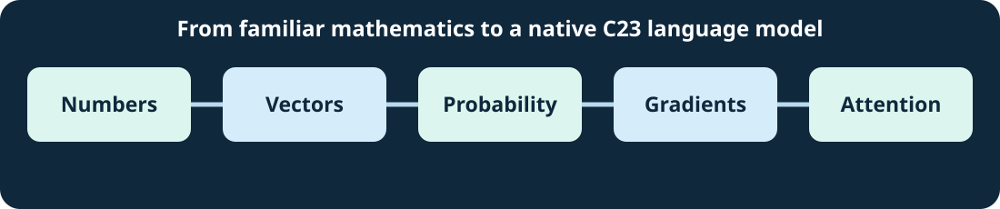

BITS TO BANKING · FOUNDATION PATHWAY
Maths for AI — From the Beginning
Numbers → vectors → matrices → probability → gradients → rotary positions → attention.
For students with any educational or professional background. No calculus, programming, financial markets or AI knowledge is required to begin.

How to study this course
You can read every unit in order or take a short detour when a native AI lesson becomes difficult. Every unit explains its formulas in words, substitutes real numbers, includes a diagram, and ends with a worked answer you can reveal. The examples use Umicom software—notes, customer queries, training models and simulated finance—not meaningless sample phrases.
- 01Numbers, fractions and percentagesFractions, percentages and numerical comparisons
- 02Variables, expressions and functionsWhat letters mean and how to follow a function
- 03Vectors, coordinates and dot productsOrdered numbers and similarity-style calculations
- 04Matrices, shapes and multiplicationTables, shapes, matrix products and transpose
- 05Probability, softmax and learning lossFrom scores to probabilities and training loss
- 06Derivatives, gradients and the chain ruleWhy gradients allow a model to learn
- 07Angles, sine, cosine and rotary positionTurn two coordinates; understand RoPE
- 08Attention, token positions and KV-cache workCompute tiny attention and examine caching
- 09Reading mathematical formulas in native C23Understand code, tolerances and notation
- 10Gradient descent and learning ratesMake and check one numerical improvement at a time
- 11Matrix weights and a complete training stepWork through every multiplication and gradient
- 12Finite differences and numerical agreementCheck gradients independently and choose tolerances
- 13From attention scores to a weighted answerLearn how two tokens produce one meaningful weighted result, with every symbol explained.
- 14Verify gradients independentlyUse two nearby loss measurements to check an automatic gradient and one SGD weight update.
- 15Repeatability, precision and trustworthy evidenceUnderstand exact repeats, acceptable numerical differences, memory accounting and honest limits.
Common symbols, without the jargon
| Symbol | Plain English | First relevant unit |
|---|---|---|
| x | A name for a value that may change | 2 |
| ≈ | Approximately equal after rounding | 1 |
| [1,2] | An ordered list of two numbers | 3 |
| Σ | Add all the indicated terms | 5 |
| √ | Square root | 2 |
| ∂ | Rate of change with respect to an input | 6 |
| θ, sin, cos | An angle and two functions describing a rotation | 7 |
| Rᵀ | The transpose of matrix R | 4 and 7 |
| α | A positive learning rate controlling the size of an update | 10 |
| ε | A small test change used to estimate a slope | 12 |
| ∂L/∂W | How the loss changes when one weight changes | 11 |
Open the full illustrated formula dictionary →
Return to the native LLM course
After Unit 7, revisit LLM Lesson 83: rotary gradients. After Unit 8, continue to LLM Lesson 85: training-tape rotary attention. New Unit 10, Unit 11 and Unit 12 support LLM Lesson 87 and Lesson 88. New Unit 13 explains causal attention from two numbers, Unit 14 explains independent gradient tests, and Unit 15 explains numerical evidence. See also the latest native LLM lesson catalogue. The mathematics course is a companion, not a replacement for advanced engineering lessons.